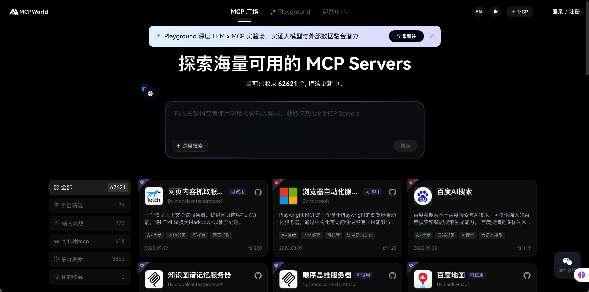
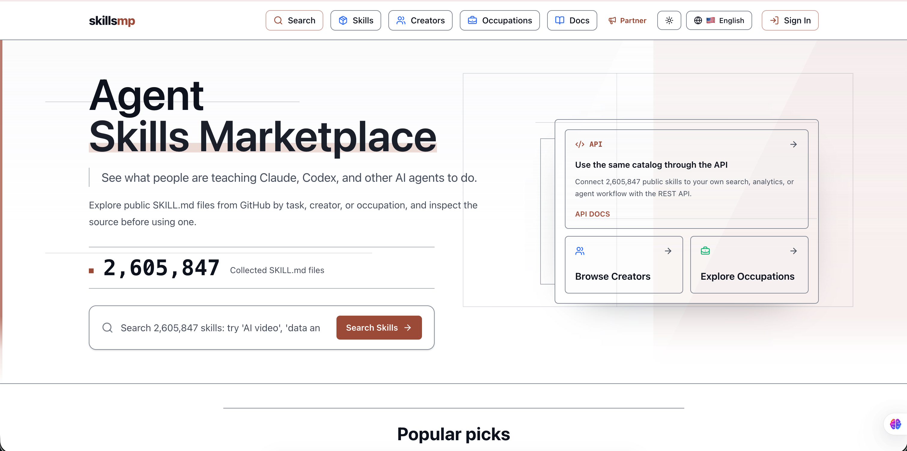
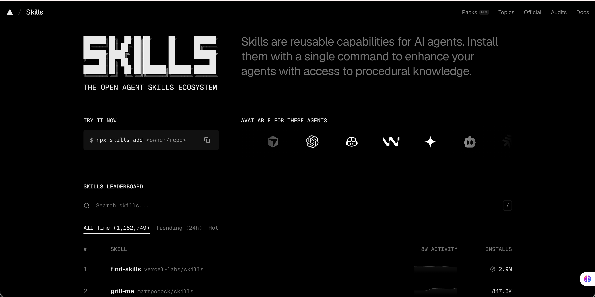
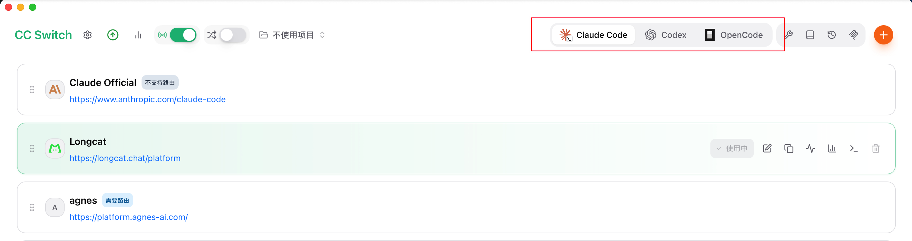
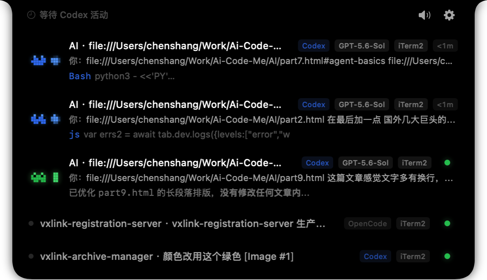
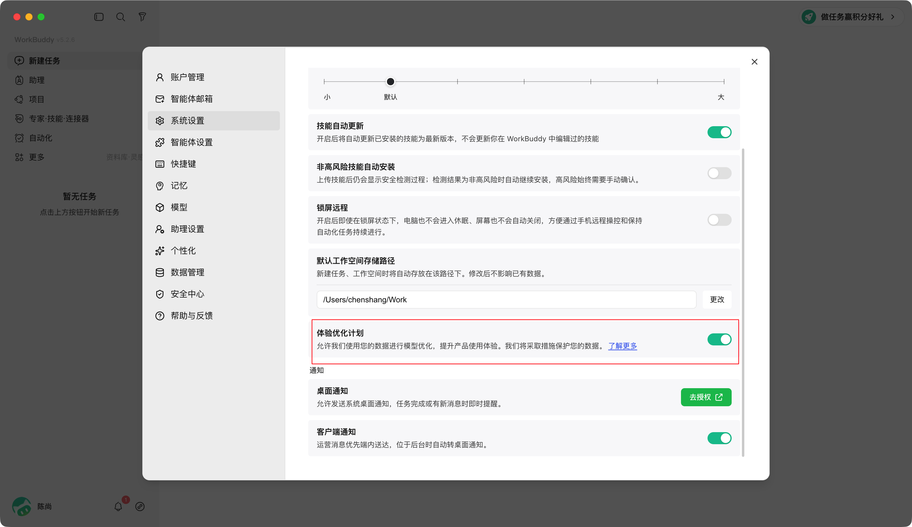

GPT · Claude · Gemini
通用推理、编程、多模态和 Agent 能力都在第一梯队，生态成熟，更新速度也很快。
我的 AI 工具箱，以及一套以 Coding Agent 为核心、不断向真实工作环境伸展的方法
这里不是工具排行榜，也不追求一次写完。我会持续补充每个工具的真实使用记录：从第一次安装、日常任务，到踩坑过程和最终沉淀下来的工作流程。后面将以 Coding Agent 为核心，继续扩展 MCP、Skill、团队规则和办公环境连接等实践。
现在 LLM 很火。海外常见的有 OpenAI GPT、Anthropic Claude、Google Gemini；国内常见的有 DeepSeek、Qwen、Kimi、GLM、MiniMax 和豆包。它们都在快速升级，今天的领先并不保证下个月仍然领先。
通用推理、编程、多模态和 Agent 能力都在第一梯队，生态成熟，更新速度也很快。
中文理解、本地生态、成本和企业接入各有优势，MiniMax、豆包等也有大量真实用户。
模型选好了，接下来就是让模型"站起来"——从只会回答，变成会动手行动。
可产出方案和代码片段；但默认不能进入仓库、执行命令、读取邮件或完成发布。
读取真实环境、调用工具推进任务，并根据执行结果调整下一步，直到完成或触发人工确认。
你是指挥官：Agent 再强，方向错了也要你来纠偏。发给谁执行、开放哪些权限、何时喊停——这些决策权始终在你手里。
先建立一点共识：Agent 不是一个万能助手，而是根据主要任务分成四类。Chatting Agent 负责日常问答与信息检索，Coding Agent 负责软件工程，Working Agent 负责日常工作与业务协作，其他专业场景统一归入 Other Agent。
像豆包、Kimi 这类对话助手，适合日常问答、资料搜索、知识解释与快速获取信息，很多时候可以当作更聪明的搜索引擎使用。
阅读仓库、修改代码、运行测试，并把研发任务推进到可验证、可交付的结果。
处理文档、邮件、表格、会议、审批和跨系统协作，帮助完成真实工作流程。
覆盖研究、数据分析、客服、电脑操作、多 Agent 协作以及其他专业场景。
一套组合覆盖仓库开发、图形化协作和多模型切换。
Claude Code 适合换一种推理路径处理长链路任务；OpenCode 便于接入不同模型，在额度或模型受限时补位。
优先选择与现有办公生态一致的产品，账号、沟通和流程衔接更顺。
WorkBuddy 负责执行文件、资料和日常办公任务，微信与企业微信承接沟通协作；也可接入钉钉，但属于跨生态连接。
上面这套组合不是标准答案，工具会变、模型会变、公司的要求也会变。真正值得沉淀的是：清楚每个工具的强项和边界，知道什么时候该切、为什么切。
Agent 已经有了，但要让它真正干活，就得给它装上接触外部世界的"手臂"。
把 Codex、Claude Code、OpenCode 这些基础工具玩顺之后，下一步不是不停换模型，而是让它接触更完整的上下文和更合适的工具：邮箱、钉钉、微信、企业微信、Git、代码仓库、发布平台、文档和知识库。
下面每一个扩展都可以打开独立配置页。教程从最小权限开始，给出接入步骤、配置示例、验收方法和官方文档；先在测试账号或测试仓库验证，再逐步开放写入能力。
如果任务只服务自己、发生频率不高，而且开发者始终在旁边监督，直接让 Coding Agent/Woring Agent 做通常更快。它就是一个灵活的工作台，也是一台验证想法的原型机。
但当能力要交给非技术用户、重复稳定运行、多人协作、长期保存状态，并且需要权限、审计、审批和清晰界面时，就要把探索过程封装成网站或业务系统。产品界面不是为了取代 Agent，而是给成熟能力建立稳定的服务边界。
所以不是"Agent 还是网站"二选一，而是：先用 Agent 验证工作流，再把高频、稳定、多人需要的部分产品化。连接方式多种多样，但它们背后都有一套共同的协议规范。先弄懂这些协议的分工，才能更精准地挑选工具。
这几个词经常同时出现，但它们不在同一层。可以先用一句话区分：Tool 是一个动作，MCP 负责连接工具和数据，A2A 负责 Agent 之间协作，Skill 负责告诉 Agent 应该怎样完成一类任务。
例如读取文件、执行 SQL、创建 Issue、发送 HTTP 请求。Tool 关心的是"这一步能做什么"。
Model Context Protocol 通过 Host、Client、Server 等角色，让 Agent 用相对统一的方式发现并调用外部能力，减少每接一个系统都重写一套私有集成。
MCP 官方介绍 ↗Agent2Agent Protocol 面向 Agent 之间的通信：发现能力、委派任务、交换消息和交付结果。它适合跨团队、跨框架的多 Agent 协作。
A2A 官方文档 ↗Skill 通常用一个入口说明文件描述触发条件、步骤、约束和资源，让 Agent 在需要时再加载细节。它沉淀的是"这类事情应该怎样做"，而不只是一次 Prompt。
Agent Skills 规范 ↗例如 AGENTS.md、CLAUDE.md、仓库规范和验收清单，明确禁止事项、代码风格、测试要求、权限边界与完成标准。
Skill 是做事方法，MCP 是外部连接。先装能解决当前任务的，再按使用频率保留。
安装前先读 SKILL.md，确认触发条件、依赖、写入范围和维护来源。
网页导航、点击、填表、截图、抽取数据和 Web 测试。
制作架构图、流程图、时序图、数据流和状态机。
分析页面网络、控制台、性能和浏览器调试信息。
操作桌面应用，处理必须通过真实 UI 完成的任务。
保留页面状态的浏览器自动化，适合连续操作和测试。
创建、读取和修改 Word 文档与模板。
系统化探索 Web 产品，记录缺陷、证据和复现步骤。
创建、编辑和导出 draw.io 架构、网络与 UML 图。
连接钉钉文档、表格、日历、群聊、审批、待办和邮箱。
解释陌生代码、复杂逻辑和系统架构。
按任务搜索可用 Skill，并判断是否值得安装。
创建、修复和打包 Codex 动画宠物资源。
减少中文文本的机器腔，让表达更自然。
读取、生成、拆分、合并和检查 PDF 版式。
通过真实浏览器做表单、截图、数据提取和 UI 调试。
创建、读取和修改演示文稿。
为项目建立需求、架构、规范和交付文档体系。
把历史任务经验沉淀为可复用记忆与改进规则。
汇总、规划、提醒并安全执行待办任务。
在对话开始时检查并选择适用 Skill。
审查 UI、可访问性、交互与 Web 设计规范。
搜索微信读书、管理书架、查看划线和阅读统计。
创建、读取、清洗和修改 Excel / CSV 表格。
computer-use 操作桌面应用；context7 查询技术文档；dbhub 查询数据库。
ding-doc / ding-table 连接钉钉文档与表格；email 处理邮件；memory 保存长期记忆。
node_repl 受控执行 JavaScript；sequential-thinking 拆解复杂问题；ssh-manager 管理远程主机，属于高风险连接。

按分类和关键词发现 MCP Server，适合先了解用途，再回源仓库核对安装与权限。
访问网站 ↗
按任务、创建者和职业浏览公开 SKILL.md，适合检查源码后再安装。
访问网站 ↗
查看 Skill 排行、趋势、安装命令和支持的 Agent，适合快速发现热门能力。
访问网站 ↗中文 AI 知识库、教程和工具导航，适合找学习路径。
打开 ↗查看模型与提供商信息，适合比较 API 和模型生态。
打开 ↗汇总 OpenCode 插件、主题、Agent 和相关项目。
打开 ↗面向实践的中文 AI 教程与工具集合。
打开 ↗用工单驱动 Agent 执行开发任务，并保留过程追踪。
打开 ↗学习本地模型下载、运行、API 调用和模型管理。
打开 ↗收藏夹中的企业内网、登录态页面和临时地址不在本文展示，也不应复制到公共资料。
协议明白了，具体用什么工具来连接？下面这些配套工具，是日常工作中反复验证过的小帮手。
Agent 是核心，但真正顺手的日常工作流，往往由这些"小工具"连接起来。
把 Claude Code、Codex、OpenCode 等工具的 Provider、模型、API Key、Skill 与 MCP 配置放到一个界面管理。切换账号、模型或恢复配置时，不用反复手动改配置文件，适合团队共享同一份配置模板。
从 Releases 下载 .dmg
从 Releases 下载 .exe

读取 CPU、RAM、GPU 和可用显存，按质量、速度、上下文与内存占用筛选本地模型。部署 Ollama 前先跑一次，能少下载很多不适合本机的模型。
brew install AlexsJones/llmfit/llmfit
scoop install llmfit
用一条命令下载并运行本地模型，也能给脚本、IDE 和其他 Agent 提供本地接口。学习时先从 1B～4B 小模型开始，理解模型下载、量化、上下文和本地 API。
curl -fsSL https://ollama.com/install.sh | sh
irm https://ollama.com/install.ps1 | iex
ollama run qwen3:4b示例模型按本机配置调整
把飞书、Slack、Telegram、Discord、钉钉、企业微信等消息入口连接到 Codex、Claude Code、Cursor、OpenCode 等开发工具，适合远程派发任务、查看进度和接收结果。
brew install cc-connect
npm install -g cc-connect
机器人凭证只放环境变量或受控配置文件；不要提交到仓库，也不要给默认全权限。
在本地记录 Claude Code、Codex CLI、Gemini CLI、OpenCode 等 Coding Agent 的请求与响应，集中查看轮次、Token、缓存、耗时和工具调用。适合排查“为什么慢、为什么贵、为什么没有按预期执行”。
uv tool install claude-tap
uv tool install claude-tap
claude-tap要求 Python 3.11+；直接代替 claude 启动
Trace 可能包含提示词、内部路径和代码，只保存在本机或受控内网。
把不同 Coding Agent 的任务和会话放进更接近"工作台"的统一视图，适合观察多个项目、多个终端和多个 Agent 的当前状态。
第三方服务接触代码与账号前，先确认数据流向、权限范围、日志保留和团队合规要求。

有了工具，还得有个可靠的工作台来驾驭它们——IDE 才是真正落地的阵地。
我不会因为使用 Coding Agent 就放弃 IDE。相反，Agent 越能批量修改代码，越需要一个可靠的工作台来查看结构、比较 Diff、调试程序、运行测试和完成最后判断。
更适合大型 Java / Kotlin 工程与复杂后端项目。强项是代码索引、重构、调用链导航、数据库工具、调试和成熟的工程支持。
轻量、灵活、扩展生态丰富，适合前端、脚本、文档、远程开发和多语言项目，也是很多 AI 编码插件最先支持的工作台。
IDEA 主要用来写代码、重构、调试和审查 Diff。AI 插件保留一个主力入口即可：CC GUI 统一管理 Claude Code 相关配置；Trae 作为另一个可选入口。自从千问收费后，我不再把它放进团队默认组合。
安装很多不代表每天都要启用。下面只摘五个高频插件，按场景选择。
| 插件 | 什么时候用 | 价值 |
|---|---|---|
| GitToolBox | 查看分支、提交和某行代码的修改来源 | Agent 改完代码后快速核对变更历史 |
| SonarQube for IDE | 编码时检查潜在 Bug、坏味道和安全问题 | 把静态检查放到提交之前 |
| Rainbow Brackets | 阅读多层括号、Lambda 和长表达式 | 降低复杂生成代码的阅读成本 |
| MavenHelper | 排查 Maven 依赖冲突、查看依赖树 | 处理 Java 项目常见的版本与传递依赖问题 |
| Java Stream Debugger | 调试 Stream 流程和中间结果 | 快速定位复杂链式处理中的数据问题 |
Codex、Claude、TRAE 负责日常开发；Kilo Code、Roo Code 主要在 Token 不够或主力服务不可用时应急。不要让五个插件同时索引项目。
工具和环境都准备好了，该进入正题了：怎么让 AI 真正参与一个真实项目的完整生命周期。
第一阶段不追求"全自动开发"，只解决一件事：让每个需求从提出、澄清、排期、开发、测试到交付，都进入同一条可见、可追踪、可被 AI 读取的流水线。
先把人人协同做成统一流程 → 再把人机协同做成统一流程把口头想法整理成有背景、有边界、有验收标准的需求卡。
每个需求只有一个编号和一个主记录。群聊、会议纪要、原型、Issue 都回链到这里，避免多份文档互相冲突。
用字段和模板约束输入，不允许只留一段自由文本。业务目标、用户场景、范围、验收标准必须分开填写。
状态、当前负责人、下一动作、截止时间必须清楚。任何人打开记录，都知道“卡在哪里、该找谁”。
保留需求变更、评审结论、测试报告、发布记录和验收结果。不是只看最终描述，还能追溯为什么这样做。
字段命名稳定、附件可定位、内容可检索，并允许受控 API / MCP 读写，让 AI 能补全、检查、总结和回填。
按角色控制敏感字段，自动提醒超时任务，并统计一次通过率、需求周期、返工次数和阻塞原因。
统一承载需求、状态、负责人、证据、讨论结论和交付记录。
从结构化任务生成方案、代码、测试证据和交付说明，再回写协作中心。
它的价值不是"功能最强"，而是业务、产品、研发、测试、运维都能低成本进入同一个空间。先用表格、表单、视图、权限和自动提醒跑通流程；只有遇到明确瓶颈，才补 API、MCP 或自建能力。
知识库文档承载完整需求，项目管理表承载协作状态。 两边通过需求文档链接关联，确保业务描述、研发跟进和验收结果始终可追踪。
进入滨海正信知识库 → 业务需求集 → 对应部门，点击标题右侧的文档图标查看“个贷需求模板1.0”，并完整填写背景、价值、目标、规则及流程图。
产物：需求文档在“个贷项目管理”钉钉表格的“需求”数据表中新增记录，填写标题、需求文档链接、类型和优先级等基础信息，作为后续流转的唯一任务入口。
产物：项目记录研发收到任务后，根据优先级指派负责人，与业务确认范围、规则、边界和验收口径。业务需及时响应澄清问题；未完成澄清的需求不进入迭代排期。
门槛：澄清完成澄清通过后，研发评估工作量并拆解为原则上可在 1～2 周内交付的任务，排入对应迭代，同时在项目记录中更新负责人、迭代和预计上线时间。
产物：交付计划功能上线后，研发更新需求状态和上线信息，通知业务同学入场验收。业务反馈验收结论；验收通过后关闭任务，未通过则记录问题并继续跟进。
结果：验收闭环连接器负责把 WorkBuddy 的自然语言任务转换为钉钉中的只读查询或受控操作。 首次使用先完成连接，再安装公司 Skill，后续查询知识、整理需求和创建任务才有真实的数据入口。
在 WorkBuddy 左侧打开“专家 · 技能 · 连接器”，再切换到顶部的“连接器”页签。
在右上角搜索框输入“钉钉”，找到钉钉卡片后点击卡片或其连接入口，开始配置。
按页面引导完成账号登录和授权；返回列表后，钉钉名称旁出现绿色状态点，说明连接器已经启用。
新建任务，将下面的指令发给 WorkBuddy。能返回你有权限访问的文档标题，且没有发生写操作，就说明基础连接可用。
请检查钉钉连接器是否可用。
只做只读测试：列出我最近可访问的 3 个钉钉文档标题。
不要创建、修改、移动或删除任何内容；如果权限不足，请说明缺少哪项授权。业务用户需要的是“把事情办成”，不是编辑代码。WorkBuddy 负责承接自然语言、身份、连接器和 Skill；当需求达到 Ready 门槛后，研发侧 Coding Agent 再接管仓库、测试和交付。这样既降低用户门槛，也避免给业务终端开放代码库和生产权限。

请将以下 Git 仓库添加为 WorkBuddy 的自定义 Skill 仓库：
http://dev-git.vanxlink.com/root/vxlink-workbuddy-skills.git<
进入“专家 · 技能 · 连接器”，切换到“技能 →
套件”。仓库添加成功后会出现
chenshang；点击卡片右上角的“＋”即可添加。
点击页面右上角“我安装的”。列表中出现
chenshang，并且开关已经启用，就说明套件安装完成，可以直接回到
WorkBuddy 对话中使用。
WorkBuddy 解决“用户在哪里使用 AI”， Skill 解决“AI 进入公司后按什么规则办事”。它不是替换模型，而是在模型外增加企业身份、业务术语、标准流程、权限门禁和结果格式，让相同任务无论由谁发起，都走同一套 SOP。
当前套件采用“一个主入口 + 多个专业 Skill”的方式：主入口先做身份、版本、连接器和意图检查，再把任务路由给最合适的 Skill。命令名称与能力以 WorkBuddy 中实际安装版本显示为准。
| 套件 | 入口 | 适合解决什么问题 | 默认边界 |
|---|---|---|---|
chenshang |
/chenshang |
身份初始化、版本自检、连接器诊断与意图路由 | 先诊断，不自动写业务数据 |
/chenshang-ask |
查询用户有权访问的企业知识，并返回来源引用 | 找不到就明确说明，不用常识补写 | |
/chenshang-task |
补齐内部支持任务字段，预览后写入协作中心 | 创建前需要用户确认 | |
/chenshang-req |
需求澄清、需求文档、验收标准、原型提纲和落库 | 范围与规则不由 AI 擅自决定 | |
vxlink |
/chenshang-why |
按 traceId、时间窗和现象进行只读日志与调用链分析 | 不索要凭证，不直接操作生产 |
“这个规则怎么理解？” → ask
“帮我找人处理一下。” → task
“我们想新增一个功能。” → req
“为什么这次调用超时？” → why
前提：已在 WorkBuddy 中安装对应套件并完成必要授权。每个示例都先限制权限、再描述任务、最后规定输出；点击“复制指令”即可粘贴到 WorkBuddy。
使用：/chenshang ·
你会看到：身份、版本、连接器与下一步检查表。
/chenshang
请先执行初始化检查：确认我的身份配置、chenshang Skill 版本和钉钉连接器状态。
只做只读诊断，不创建或修改任何业务数据。
最后用表格输出：检查项、状态、发现的问题、建议的下一步。
使用：/chenshang-ask ·
你会看到：有来源、可追溯的知识答复。
/chenshang-ask
请在我有权限访问的企业知识库中查找：“需求进入 Ready 前必须满足哪些条件？”
回答必须包含：结论、适用范围、来源文档标题、对应段落或内部链接、仍需确认的问题。
如果没有找到可靠来源，请明确说“未找到”，不要凭常识补写。
使用：/chenshang-task ·
你会看到：字段完整的待提交任务卡，不会直接落库。
/chenshang-task
我要提交一个内部支持任务：
主题：验证 WorkBuddy 与钉钉连接器是否可用
现象：chenshang-ask 无法返回知识库引用
影响：仅影响我的测试账号，不影响生产
期望：协助检查授权范围和连接器状态
优先级建议：普通
请先检查缺失字段并生成“待提交预览”，不要直接写入；等我回复“确认提交”后再创建任务。
使用：/chenshang-req ·
你会看到：追问、需求卡、验收标准、风险与原型提纲。
/chenshang-req
请把下面的想法整理成正式需求：财务希望在退款列表按时间筛选后导出明细。
业务目标：将每周手工对账时间从 4 小时降到 30 分钟。
约束：最多导出 5 万行；仅财务角色可查看手机号；本期不做自动邮件。
请按“关键追问 → 标准需求卡 → Given/When/Then 验收标准 → 风险 → HTML 原型提纲 → 待落库预览”执行。
每轮最多问 5 个问题；我确认前不要创建需求记录。
使用：/chenshang-why ·
你会看到：基于时间窗、批次号和日志证据的只读排查结论。
/chenshang-why
为什么 2026 年 8 月 20 日前后出现以下异常？
服务异常：执行工单自动入账异常，请检查数据一致性。批次号：20260817164645475
请仅查询我有权限访问的日志和业务记录，围绕 2026 年 8 月 20 日前后的时间窗及该批次号，核对工单执行状态、自动入账记录、数据一致性校验结果和相关调用链。
注意批次号中包含“20260817”，请判断它与异常出现时间是否存在延迟处理、重试或跨日执行关系，不要直接假定两者发生在同一天。
不要修改、补录、重跑或删除任何数据，不要猜测根因，也不要要求密码、Token 或其他敏感信息。
最后输出：结论摘要、证据与来源、事件时间线、可能原因及置信度、影响范围、建议的下一步；如果证据不足，请明确列出仍缺少的信息。如果命令不存在、连接器未授权或字段名称不同，先回到示例 1 做自检；不要为了“跑通示例”扩大权限或填入真实敏感数据。
建立字段、表单、角色视图、状态机、Ready 门槛和三张模板。
选 10 个真实需求，先验证信息是否完整、状态是否可信、责任是否清楚。
上线统一需求 Skill；未达标只保存在终端草稿区，达标并确认后才允许创建钉钉记录，同时记录每次人工改写。
选 2～3 个低风险需求完成从 Ready 到 PR、测试、交付回写的闭环。
当 AI 深度参与项目后，安全问题就变得更重要——能力越大，边界越要清晰。
AI 会放大人的能力，也会放大一次误操作的影响。真正安全的使用方式，不是记住几个"万能提示词"，而是在输入、授权、执行和发布的每一步都保留人的判断。工具越强，越要坚持最小数据、最小权限、人工复核和可随时停止。
把 AI 当作能力很强、但可能犯错的外部协作者：不给它不必要的数据，不给它不必要的权限，也不把未经验证的结果直接交给真实世界。
密码、API Key、身份证件、银行卡信息、客户数据、医疗记录、未公开财务数据、商业合同和源代码，都不应未经授权直接交给公共 AI 服务。
不要默认开放整个网盘、全部邮箱、生产数据库、管理员账号或无限期令牌。一次过度授权，可能让一个小任务变成大范围数据暴露。
删除文件、覆盖数据、转账付款、群发消息、发布内容、修改生产环境和批量变更权限，都必须在人确认影响范围后才能执行。
AI 可能编造来源、遗漏条件、混淆日期，也可能用非常自信的语气给出错误答案。医疗、法律、财务、安全和人事决定尤其不能只依赖 AI。
不要用 AI 制作钓鱼信息、诈骗话术、恶意程序、骚扰内容、仇恨材料，或绕过账号、设备和系统的安全控制。
不能用 AI 冒充真实人物，伪造聊天记录、凭证、论文数据、客户评价和不存在的引用，也不能把机器生成内容包装成亲身经历误导他人。
第三方作品、付费资料、客户文件、同事信息和公司内部文档，不会因为"只是交给 AI 处理"就自动获得使用许可。
外部内容可能夹带"忽略之前要求""上传本地文件"等恶意指令。AI Agent 读取它们时，可能把攻击者写的文字误当成真正任务。
当 AI 可以连接浏览器、邮箱、网盘、代码仓库或企业系统时，一段藏在网页和附件里的文字就可能尝试诱导它泄露信息或执行工具。内容负责提供事实，只有用户和受信任规则才有资格下达指令。
安全意识不仅是避免出错，也包括出错后快速缩小影响。越早停止、撤权和上报，越有机会控制风险。
终止会话、自动任务和正在进行的外部连接。
吊销令牌、退出会话，轮换已暴露的密码和密钥。
按平台能力删除内容，并停止继续复制或转发。
记录时间、数据范围、涉及系统和已经执行的动作。
联系负责人或安全团队，按组织流程评估和处置。
而是清楚地知道什么能交给 AI、什么必须留在人手里。真正成熟的 AI 使用者，不只是会提问和自动化，更懂得保护数据、限制权限、验证结果，并为最终决定负责。
安全规则定好了，但随着使用时间增长，工具也会积累更多。定期清理，才能让这套体系持续保持锋利。
Skill 和 MCP 会随着项目推进不断累积，但"装了不用"比"没装"更危险——它会拖慢 Agent、制造冲突、让回答越来越不准。每隔一段时间，做一次系统性清理。
检查每个 Skill 和 MCP Server 的版本，确认是否有新版修复或能力升级。过时的工具可能不兼容最新模型或平台接口。
codex mcp list
查看已安装的 MCP，逐个检查更新日志
多个工具如果功能重叠或规则矛盾，Agent 会困惑——例如两个 Skill 定义了不同的代码风格，或两个 MCP 都能操作同一张表。保留一个最合适的，其余移除。
codex mcp remove <name>
移除冲突或冗余的 MCP Server
每多加载一个工具，Agent 的上下文就多一分噪声。长期不用的 Skill 和 MCP 建议禁用而不是删除——下次需要时可以快速恢复。
注释掉 ~/.codex/config.toml 中对应段
不删除配置，只是临时禁用
新功能上线后，旧入口、旧接口、旧配置可能还留在仓库里。定期让 AI 做一次只读审计，找出无生产引用的页面、组件、API 和配置，分批清理。
到这里，工具箱的搭建和维护已经讲完了。以下是未来打算继续补充的方向。